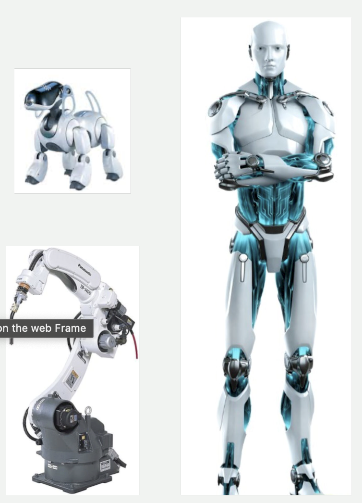
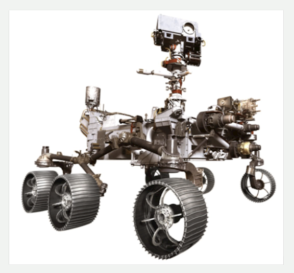

Actividades de iniciación
Descubre tus conocimientos previos contestando en tu cuaderno las siguientes preguntas:
- Enumera cinco robots o automatismos que utilices a dario o que tengas cerca de tu entorno doméstico.
- Enumera cinco cosas que puedan hacer los robots que nos rodean. Piensa en los robots que hayas visto en las noticias.
- Las personas utilizamos nuestros cinco sentidos: vista, oído, tacto, olfato y gusto. ¿Qué sentidos crees que podemos desarrollar en un robot?
- ¿Cómo crees que detecta la temperatura un equipo de aire acondicionado?
- Explica cómo crees que es el funcionamiento para mantener la temperatura de una habitación a 21 grados.
Introducción
Atumatismos y robots
- Automatismo: mecanismo o máquina que realiza una tarea concreta, pero cuyo funcionamiento no se puede modificar una ez accionado. Ejemplos: tostadora, cisterna del wáter, máquina de vending

- Robot: máquina automática progamable, que capta información del entorno y actúa en consecuencia

Tipos de robot según ámbito de uso
- Robótica industrial: soldadura, corte, pintura, movimiento de piezas, ensamblado, ...
- Robótica de servicio: aspiradores, educativos, de ayuda, ...
- Robótica médica: operaciones, tratamientos, prótesis, ... (nanorobots)
- Robótica terrestre, marítima y aérea: vehículos autónomos, submarinos, drones
- Robótica de seguridad y defensa: detección de explosivos, rastreadores, vigilancia, ...

Tipos de robot según morfología (forma)
- Androides
- Zoomórficos
- Poliaticulados
- Móviles
 
Funcionamiento de un robot
- Sensores: recogen información del entorno
- Controlador: procesa información de los sensores y envía órdenes a los actuadores
- Actuadores: (motores, luces, …) realizan las acciones que indica la controladora
<iframe width="560" height="315"
src="https://youtu.be/z5IqRReRKtA?si=dpKBI4Ri8MGLZ4n-"
title="YouTube video player" frameborder="0"
allow="accelerometer; autoplay; clipboard-write; encrypted-media; gyroscope; picture-in-picture"
allowfullscreen >
</iframe>
Sensores: captan información del entorno
Actuadores: ejecutan acción

Tarjeta controladora micro:bit


Quina és la estructura d'un programa Python?
import os
def main():
# Ací el teu codi en python
print("Hol, mon!")
if __name__ == "__main__":
main()
Copia i prova el teu codi a un IDE